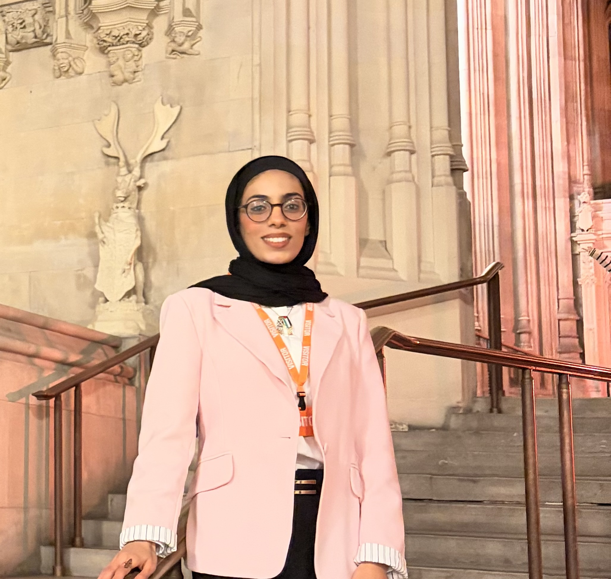
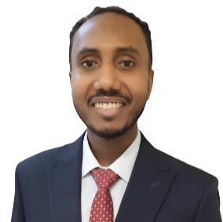

Exam & re-accreditation support
Funding and mentorship for professional and language exams, helping Fellows translate their expertise into UK-recognised qualifications.


Supporting professional and community leaders from conflict-affected countries
Programme overview
Altenburg Fellows are distinctive scholarship-funded students and professional leaders from conflict-affected countries who have come to the UK to study postgraduate level programmes and advance their careers.
The Fellowship provides structured academic, professional and practical support so they can progress their studies and re-enter their professions. All fellows are actively working on projects which support their communities in their home countries.
The Fellowship is designed to increase stability and support for these exceptional people to make sure they fulfil their academic and professional potential, and maximise the impact and scope of their community initiatives.
What the programme offers
A holistic pathway for professional progression, academic success, and community empowerment.
Funding and mentorship for professional and language exams, helping Fellows translate their expertise into UK-recognised qualifications.
Practical help navigating UK legal, visa and professional body applications, recognition and licensing processes, so Fellows can practise in their fields without delay.
Job-matching, interview preparation, networking and work placement opportunities to connect Fellows with meaningful roles relevant to their professions.
Practical help with visa applications to allow scholars to remain safe from the huge risks of returning to their home countries, alongside guidance and support with accessing accommodation during accreditation and integration processes.
Shared dinners, cultural events, and wellbeing activities that build genuine community and help Fellows feel at home in the UK.
Advisory support and seed funding for Fellows’ community projects in their home countries, because their work in conflict-affected countries matters just as much as their studies here.
The Fellowship community
Altenburg Fellows are selected for their academic excellence, professional experience, community leadership and ongoing impact in their home countries.
They have come to the UK to pursue advanced studies and re-establish their careers; yet many fall between systems, often being ineligible for student loans, hardship grants and statutory financial support.
At The Altenburg Foundation, our support is an investment in their high potential to contribute both in the UK and in their home communities.
Current Fellows
Five professionals from the 2025 Fellowship cohort, combining postgraduate development in the UK with a wider commitment to community impact.


MSc Data Science and Artificial Intelligence
Goldsmiths, University of London
View Profile
Joint MSc Global Mental Health
King’s College London and London School of Hygiene & Tropical Medicine
View Profile
Support the Fellowship
Individuals, employers, professional bodies, partners and others can help remove practical barriers and open professional pathways.
How to become a Fellow
The Altenburg Foundation Fellows are drawn from a competitive pool of extraordinary applicants who best meet the six criteria below.
You have been awarded a competitive scholarship to a London-based university for postgraduate study.
You are from a country experiencing or recovering from conflict, fragility or crisis.
You have qualified professional experience in medicine, law, engineering, education, entrepreneurship, science or community leadership.
You are actively engaged in initiatives that strengthen your home community.
You have a strong record of academic achievement that reflects your potential and drive.
You embody integrity, service, respect for diversity, professional advancement and commitment to the activities of the Fellowship.
Apply
Review the criteria above before beginning your application.